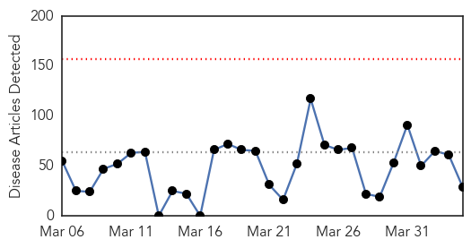
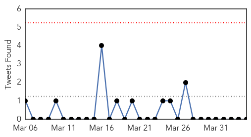
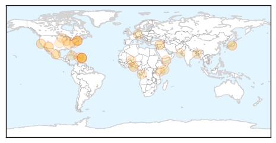
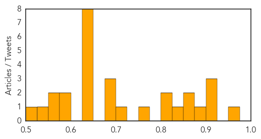

Toggle navigation
Early Warning
Daily Alerts
Unknown
Apr 04, 2015
Compare to:
-
Dengue Fever
Hemmorhagic Fever
Mold/Fungal Infection
Influenza
Meningitis
Pertussis / Whooping Cough
Middle East Respiratory Syndrome
Cholera
Hepatitis
Chikungunya
Yellow Fever
Bubonic Plague
West Nile Virus
Swine Flu
Ebola
Measles
Mumps
30 Day Trends
Web: 0
alerts
, 0
warnings
Twitter: 0
alerts
, 0
warnings
Top Articles:
0.974
Banner Health lifts visitor restrictions at North Colorado Medical Center in Greeley, all other faci
0.919
CDC: Large number of patients with shigella found in Mass.
0.917
Chicago Tribune
0.917
Chicago Tribune
0.878
Fighting a killer disease, malaria
0.874
Imported drug-resistant stomach bug spreading in US
0.856
CDC Alert: Drug-Resistant Foodborne Illness Spreads in US – Phenomena: Germination
0.829
Drug-resistant stomach bug arrives from overseas
0.819
Imported drug-resistant stomach bug spreading in US
0.814
Senior health official urges Hunter residents to cover up in response to Ross River Virus outbreak
0.763
ISIS fighters hit by deadly flesh-eating disease
0.700
FM NewsTalk 97.1
0.700
FM NewsTalk 97.1
0.700
Two diagnosed with active tuberculosis (TB) at Mt. Rainier High School
0.692
Dog flu outbreak claims five Chicago dogs' lives, closes dog day care centers
0.635
Russia joins Red Cross in call for immediate Yemen ceasefire
0.635
Reporter’s Notebook: Lessons from Nigerian elections
0.635
Al Shabaab threatens more attacks against Kenya
0.635
Kenya begins three days of national mourning after massacre
0.635
‘Symbolic victory’ as French court summons ex-Gitmo chief
0.635
Gunmen kidnap Romanian security officer in Burkina Faso
0.633
Unsafe food is ‘growing global threat’
0.629
Diseases contracted from animals
0.585
TWO PEOPLE DIAGNOSED WITH ACTIVE TB AT LOCAL SCHOOL
0.578
2 at Mount Rainier High diagnosed with tuberculosis
0.557
Riverwood Healthcare Center promotes patient safety awareness
0.552
What is Shigella? Drug-resistant bacteria causes intestinal illness across the US, CDC says
0.532
ASH faces acute shortage of drugs
0.518
Deadly bird flu shows up in South Dakota, 4th Minnesota farm
Top Tweets:
No tweets found for Apr 04, 2015
Web/News Articles

Tweets

Article Locations

Article Confidences
